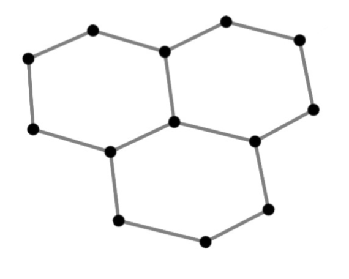
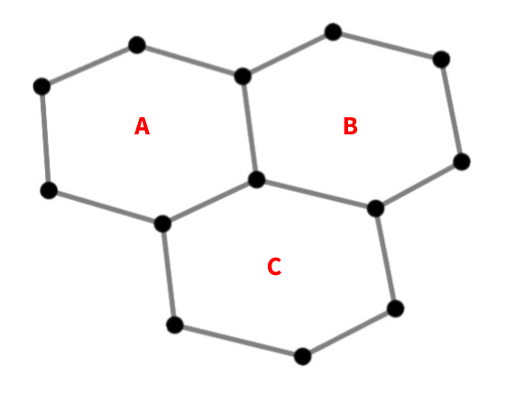
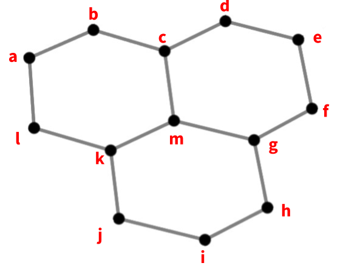
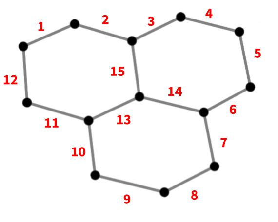

Data Mapping
When attempting to visualize a data variable that resides on an unstructured grid, it’s important to identify what element it is mapped to, since that will dictate what visualization to choose.
This notebook provides a quick overview of how data is commonly mapped to unstructured grid elements.
import uxarray as ux
Sample Mesh
As described in the previous sections, an Unstructured Grid is composed of Nodes, Edges, and Faces.
Below is a basic example of an Unstructured Grid, containing 13 Nodes, 15 Edges, and 3 Faces.

Face-Centered Data
Face-Centered data is mapped to the area that each face covers.

Node-Centered Data
Node-Centered data is assigned to the corners of each face.

Edge-Centered Data
Edge-Centered data is assigned to the edge that connects each pair of modes.

Identifying Data Mappings with UXarray
We can identify what element a data variable is mapped to by looking at the final dimensions of a UxDataArray or UxDataset
file_dir = "../../meshfiles/"
grid_filename_mpas = file_dir + "oQU480.grid.nc"
data_filename_mpas = file_dir + "oQU480.data.nc"
uxds_mpas = ux.open_dataset(grid_filename_mpas, data_filename_mpas)
uxds_mpas["bottomDepth"].dims
('n_face',)
The variable bottomDepth has a dimension of n_face, which means that it is mapped to faces.
grid_filename_geoflow = file_dir + "geoflow.grid.nc"
data_filename_geoflow = file_dir + "geoflow.data.nc"
uxds_geoflow = ux.open_dataset(grid_filename_geoflow, data_filename_geoflow)
uxds_geoflow["v1"].dims
('time', 'meshLayers', 'n_node')
The variable v1 has a final dimension of n_node, which means that it is mapped to the corner nodes of each face. However, it also has additional dimensions, time and meshLayers. These additional dimensions describe the dimensionality of the data outside the unstructured grid, representing the temporal and vertical dimensions.